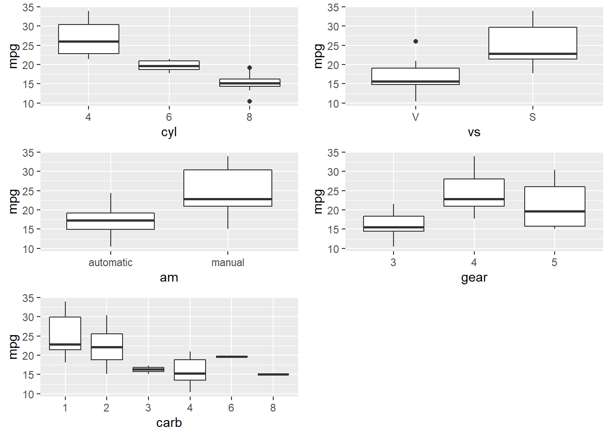

4.2 Parameter Estimation
There are two model parameters to estimate: \(\hat{\beta}\) estimates the coefficient vector \(\beta\), and \(\hat{\sigma}\) estimates the variance of the residuals along the regression line.
Derive the coefficient estimators by minimizing the sum of squared residuals \(SSE = (y - X \hat{\beta})' (y - X \hat{\beta})\). The result is
\[\hat{\beta} = (X'X)^{-1}X'y.\]
The residual standard error (RSE) estimates the sample deviation around the population regression line. (Think of each value of \(X\) along the regression line as a subpopulation with mean \(y_i\) and variance \(\sigma^2\). This variance is assumed to be the same for all \(X\).)
\[\hat{\sigma} = \sqrt{(n-k-1)^{-1} e'e}.\]
The standard error for the coefficient estimators is the square root of the error variance divided by \((X'X)\).
\[SE(\hat{\beta}) = \sqrt{\hat{\sigma}^2 (X'X)^{-1}}.\]
4.2.0.1 Example
Dataset mtcars contains response variable fuel consumption mpg and 10 aspects of automobile design and performance for 32 automobiles. What is the relationship between the response variable and its predictors?
d <- mtcars %>%
mutate(vs = factor(vs, labels = c("V", "S")),
am = factor(am, labels = c("automatic", "manual")),
cyl = ordered(cyl),
gear = ordered(gear),
carb = ordered(carb))
glimpse(d)## Rows: 32
## Columns: 11
## $ mpg <dbl> 21, 21, 23, 21, 19, 18, 14, 24, 23, 19, 18, 16, 17, 15, 10, 10...
## $ cyl <ord> 6, 6, 4, 6, 8, 6, 8, 4, 4, 6, 6, 8, 8, 8, 8, 8, 8, 4, 4, 4, 4,...
## $ disp <dbl> 160, 160, 108, 258, 360, 225, 360, 147, 141, 168, 168, 276, 27...
## $ hp <dbl> 110, 110, 93, 110, 175, 105, 245, 62, 95, 123, 123, 180, 180, ...
## $ drat <dbl> 3.9, 3.9, 3.8, 3.1, 3.1, 2.8, 3.2, 3.7, 3.9, 3.9, 3.9, 3.1, 3....
## $ wt <dbl> 2.6, 2.9, 2.3, 3.2, 3.4, 3.5, 3.6, 3.2, 3.1, 3.4, 3.4, 4.1, 3....
## $ qsec <dbl> 16, 17, 19, 19, 17, 20, 16, 20, 23, 18, 19, 17, 18, 18, 18, 18...
## $ vs <fct> V, V, S, S, V, S, V, S, S, S, S, V, V, V, V, V, V, S, S, S, S,...
## $ am <fct> manual, manual, manual, automatic, automatic, automatic, autom...
## $ gear <ord> 4, 4, 4, 3, 3, 3, 3, 4, 4, 4, 4, 3, 3, 3, 3, 3, 3, 4, 4, 4, 3,...
## $ carb <ord> 4, 4, 1, 1, 2, 1, 4, 2, 2, 4, 4, 3, 3, 3, 4, 4, 4, 1, 2, 1, 1,...The data consists of 32 observations. A scatterplot matrix of the numeric variables shows the strongest individual association with mpg is from wt (corr = -0.87) followed by disp (corr = -0.85) and hp (corr = -0.78), drat is moderately correlated with mpg (corr = 0.68), and qsec is weakly correlated with mpg (corr = 0.42).
corrplot(cor(subset(d, select = c(mpg, disp, hp, drat, wt, qsec))),
type = "upper",
method = "number")
Many of the Predictor variables are strongly correlated with each other. Boxplots of the categorical variables shows differences in levels, although ordinal variables gear and and carb do not have a monotonic relationshiop with mpg.
p_list <- list()
for(i in c("cyl", "vs", "am", "gear", "carb")) {
p <- ggplot(d, aes_string(x = i, y = "mpg")) + geom_boxplot()
p_list <- c(p_list, list(p))
}
do.call("grid.arrange", c(p_list, ncol = 2))
I’ll drop the gear and carb predictors, and fit a population model to the remaining predictors.
##
## Call:
## lm(formula = mpg ~ ., data = d[, 1:9])
##
## Residuals:
## Min 1Q Median 3Q Max
## -3.998 -1.355 -0.311 1.199 4.110
##
## Coefficients:
## Estimate Std. Error t value Pr(>|t|)
## (Intercept) 19.54098 14.14642 1.38 0.181
## cyl.L 0.34256 2.76483 0.12 0.903
## cyl.Q 1.38843 1.11210 1.25 0.225
## disp 0.00669 0.01351 0.49 0.626
## hp -0.02914 0.01718 -1.70 0.104
## drat 0.58806 1.50311 0.39 0.699
## wt -3.15525 1.42023 -2.22 0.037 *
## qsec 0.52324 0.69013 0.76 0.456
## vsS 1.23780 2.10606 0.59 0.563
## ammanual 3.00091 1.85340 1.62 0.120
## ---
## Signif. codes: 0 '***' 0.001 '**' 0.01 '*' 0.05 '.' 0.1 ' ' 1
##
## Residual standard error: 2.5 on 22 degrees of freedom
## Multiple R-squared: 0.877, Adjusted R-squared: 0.826
## F-statistic: 17.4 on 9 and 22 DF, p-value: 0.0000000481The summary() function shows \(\hat{\beta}\) as Estimate, \(SE({\hat{\beta}})\) as Std. Error, and \(\hat{\sigma}\) as Residual standard error. You can verify this by manually peforming these calculations using matrix algebra (see matrix algebra in r notes at R for Dummies). Here are the coefficient estimators, \(\hat{\beta} = (X'X)^{-1}X'y\).
## [,1]
## (Intercept) 19.5410
## cyl.L 0.3426
## cyl.Q 1.3884
## disp 0.0067
## hp -0.0291
## drat 0.5881
## wt -3.1553
## qsec 0.5232
## vsS 1.2378
## ammanual 3.0009Here is the residual standard error, \(\hat{\sigma} = \sqrt{(n-k-1)^{-1} \hat{e}'\hat{e}}\).
n <- nrow(X)
k <- ncol(X) - 1 # exclude the intercept term
y_hat <- X %*% beta_hat
sse <- sum((y - y_hat)^2)
rse <- sqrt(sse / (n - k - 1))
cat("Residual standard error: ", round(rse, 3), " on ", (n - k - 1), " degrees of freedom.")## Residual standard error: 2.5 on 22 degrees of freedom.Use the residual standard errors to derive the standard errors of the coefficients, \(SE(\hat{\beta}) = \sqrt{\hat{\sigma}^2 (X'X)^{-1}}\).
se_beta_hat <- sqrt(diag(rse^2 * solve(t(X) %*% X)))
matrix(round(se_beta_hat, 5), dimnames = list(names(se_beta_hat), "Std. Error"))## Std. Error
## (Intercept) 14.146
## cyl.L 2.765
## cyl.Q 1.112
## disp 0.014
## hp 0.017
## drat 1.503
## wt 1.420
## qsec 0.690
## vsS 2.106
## ammanual 1.853